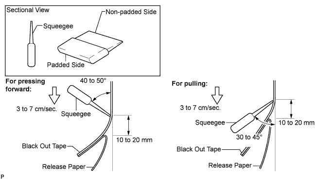
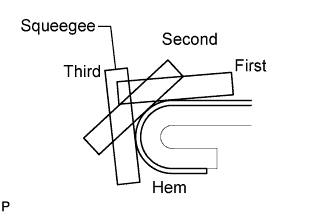
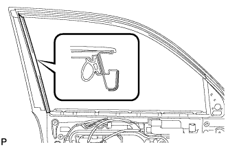
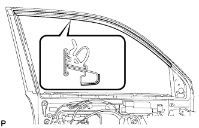
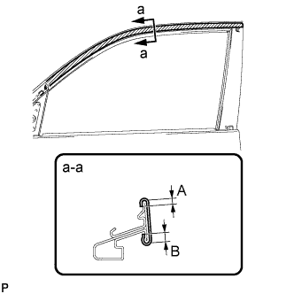
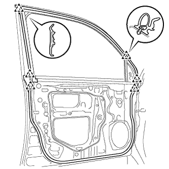

BLACK OUT TAPE (for Front Door) > INSTALLATION |
| Item | Temperature |
| Vehicle Body | 40 to 60°C (104 to 140°F) |
| Black Out Tape | 20 to 30°C (68 to 86°F) |
| Window Frame Moulding | 20 to 30°C (68 to 86°F) |
| 1. REPAIR INSTRUCTION |
Clean the vehicle body surface.
Using a heat light, heat the vehicle body surface.
Wipe off any tape adhesive residue with cleaner.
Installation temperature
When the ambient temperature is below 15°C (59°F), perform the installation procedure after warming the vehicle body surface (installation surface of the door frame) and tape up to between 20 and 30°C (68 and 86°F) using a heat light. When the ambient temperature is above 35°C (95°F), cool the vehicle body surface (installation surface of the door frame) and tape down to between 20 and 30°C (68 and 86°F) prior to installation.
Before installation
Make sure any dirt on and around the vehicle body surface where the tape will be installed (installation surface of the door frame) is removed, and that the surface is smooth. If the surface is rough or dirt remains when pressing the tape onto the surface, air will be trapped under the tape and result in a poor appearance.
Key points for handling the tape
The tape bends and rolls up easily. Store the tape between flat pieces of cardboard or other similar objects and keep it dry and level.
Key points for the installation of the tape (how to use a squeegee and the installation procedure for flat surfaces)
To avoid air bubbles, slightly raise the part of the tape that is going to be applied so that its adhesive surface does not touch the vehicle body while applying the tape. Tilt the squeegee at 40 to 50° (for pressing forward) or 30 to 45° (for pulling) to the vehicle body surface and press the tape onto the vehicle body surface with a force of 20 to 30 N (2 to 3 kgf) at a constant slow speed of 3 to 7 cm (1.2 to 2.8 in.) per second.

Key points for the installation of the tape (how to use a squeegee and the installation procedure for hemming surfaces)
 |
If it is difficult to press the tape, press it in several steps as shown in the illustration. Use your fingers or the padded surface of a squeegee to slowly apply the tape to the hem of the vehicle, especially for a small hem.
Key points for the installation of the tape (how to use a squeegee and the installation procedure for corners)
Remove the release paper and apply the tape carefully with your fingers.
Before applying the tape to each corner, heat the tape using a heat light and gradually apply it to avoid wrinkles on the tape and achieve a neat finish.
Check after installation
After completing the application, check if the tape is applied neatly. If the tape is not applied neatly, apply new tape.
| 2. INSTALL NO. 4 BLACK OUT TAPE LH |
 |
Refer to the illustration to position a new No. 4 black out tape.
Remove the release paper and apply the tape.
| 3. INSTALL NO. 3 BLACK OUT TAPE LH |
 |
Refer to the illustration to position a new No. 3 black out tape.
Remove the release paper and apply the tape.
| 4. INSTALL NO. 1 BLACK OUT TAPE LH |
 |
Refer to the illustration to position a new No. 1 black out tape.
| Area | Dimension |
| A | 2 to 4 mm (0.078 to 0.158 in.) |
| B | 4 to 6 mm (0.158 to 0.236 in.) |
Remove the release paper and apply the tape.
| 5. INSTALL FRONT DOOR WEATHERSTRIP LH |
 |
Attach the 6 clips and install the upper part of the front door weatherstrip.
| 6. INSTALL LOWER DOOR FRAME GARNISH LH |
 |
Attach a new clip and install the door frame garnish.
| 7. INSTALL FRONT DOOR REAR WINDOW FRAME MOULDING LH |
Clean the vehicle body surface.
Using a heat light, heat the vehicle body surface.
Remove the double-sided tape from the vehicle body surface.
Wipe off any tape adhesive residue with cleaner.
Install a new window frame moulding.
Using a heat light, heat a new window frame moulding and the vehicle body surface.
Remove the peeling paper from the face of the window frame moulding.
 |
Attach the clip and double-sided tape to install the window frame moulding.
| 8. INSTALL FRONT DOOR BELT MOULDING ASSEMBLY LH |
 |
Attach the claw to install the belt moulding.
| 9. INSTALL FRONT DOOR GLASS RUN LH |
 |
Install the front door glass run.
| 10. INSTALL FRONT DOOR GLASS SUB-ASSEMBLY LH |
 |
Insert the door glass into the door panel along the glass run as indicated by the arrows in the illustration.
 |
Install the door glass to the window regulator with the 2 bolts.
| 11. INSTALL FRONT INNER DOOR GLASS WEATHERSTRIP LH |
Install the front inner door glass weatherstrip LH.
| 12. INSTALL FRONT DOOR SERVICE HOLE COVER LH |
 |
Apply butyl tape to the door.
Pass the front door lock remote control cable and front door inside locking cable through a new front door service hole cover.
 |
Connect the 2 connectors.
Attach the 9 clamps.
Install the bolt as shown in the illustration.
| 13. INSTALL OUTER REAR VIEW MIRROR ASSEMBLY LH |
 |
Attach the claw and Install the mirror with the 3 nuts.
Attach the clamp.
Connect the connector labeled A.
| 14. INSTALL FRONT DOOR TRIM BOARD SUB-ASSEMBLY LH |
Connect the connector.
 |
Connect the front door lock remote control cable and front door inside locking cable to the front door inside handle sub-assembly.
 |
Attach the 4 claws and 13 clips to install the front door trim board sub-assembly.
Install the 3 screws.
| 15. INSTALL DOOR ASSIST GRIP COVER LH |
 |
Attach the 8 claws to install the door assist grip cover to the door trim panel.
| 16. INSTALL FRONT DOOR ARMREST BASE PANEL ASSEMBLY LH |
Connect the connector.
 |
Attach the 5 claws and install the front door armrest base panel.
| 17. INSTALL FRONT DOOR INSIDE HANDLE BEZEL LH |
 |
Attach the 4 claws to install the bezel.
| 18. INSTALL FRONT LOWER DOOR FRAME BRACKET GARNISH LH |
 |
Attach the clip and claw, and install the front door lower frame bracket garnish.
| 19. CONNECT CABLE TO NEGATIVE BATTERY TERMINAL |